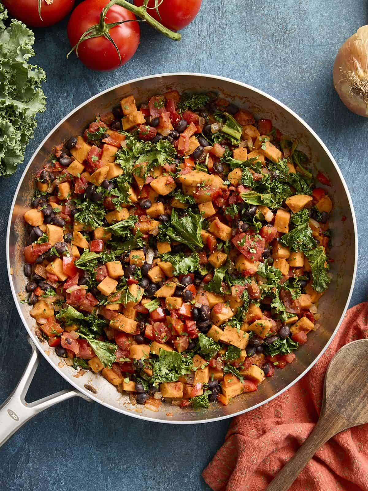

home
Sweet Potato Black Bean Skillet
recipe source

Description
Quick and easy one-skillet meals are always my favorite and this Sweet Potato Black Bean skillet is no exception. It’s nutritious, veggie-packed, perfect for cleaning out the fridge or pantry, and of course it’s budget-friendly! It’s also great for meal prep. So grab some avocados, sour cream or greek yogurt, and your favorite salsa and get ready to enjoy this simple and delicious 25-minute meal!
Ingredients
- 1.5 lbs. sweet potatoes (about 2 medium)
- 1 red bell pepper, diced
- 1 small yellow onion, diced
- 1.5 Tbsp olive oil
- 1 tsp chili powder
- 1/2 tsp cumin
- 1/2 tsp garlic powder
- 3/4 tsp salt
- 1/4 tsp freshly cracked black pepper
- 1/4 tsp smoked paprika
- 1 15 oz. can black beans, drained
- 1 14 oz. can petite diced tomatoes
- 2 cups chopped kale
- 1 Tbsp fresh chopped cilantro
Instructions
- Wash, peel, and dice the sweet potatoes. Dice the red bell pepper and the onion.
- Heat a large skillet over medium heat and add the olive oil. Add the diced sweet potatoes and cook for 8 minutes. Stir occasionally but not too often so the sweet potatoes have a chance to brown and caramelize. Don’t worry if the sweet potatoes are not fork tender during this time as they will continue to cook in the next step.
- Now add the diced bell pepper, onion, chili powder, cumin, garlic powder, salt, black pepper, and smoked paprika to the skillet. Stir together with the sweet potatoes. Cook for an additional 3 minutes.
- Add the black beans, diced tomatoes, and chopped kale to the skillet. Gently stir together and cook for an additional 2-3 minutes. Feel free to add 1-2 Tbsp of water if the skillet is getting too dry.
- Now all that's left to do is top with some fresh chopped cilantro and enjoy!